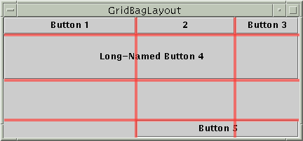

Feedback Form
|
|
Start of Tutorial > Start of Trail > Start of Lesson |
Search
Feedback Form |
Here's an applet that shows aGridBagLayoutin action.
This is a picture of the applet's GUI. To run the applet, click the picture. The applet will appear in a new browser window.
GridBagLayoutis the most flexible -- and complex -- layout manager the Java platform provides. AGridBagLayoutplaces components in a grid of rows and columns, allowing specified components to span multiple rows or columns. Not all rows necessarily have the same height. Similarly, not all columns necessarily have the same width. Essentially,GridBagLayoutplaces components in rectangles (cells) in a grid, and then uses the components' preferred sizes to determine how big the cells should be.The following figure shows the grid for the preceding applet. As you can see, the grid has three rows and three columns. The button in the second row spans all the columns; the button in the third row spans the two right columns.
If you enlarge the window as shown in the following figure, you'll notice that the bottom row, which contains Button 5, gets all the new vertical space. The new horizontal space is split evenly among all the columns. This resizing behavior is based on weights the program assigns to individual components in the
GridBagLayout. You'll also notice that each component takes up all the available horizontal space -- but not (as you can see with button 5) all the available vertical space. This behavior is also specified by the program. The way the program specifies the size and position characteristics of its components is by specifying constraints for each component, To specify constraints, you set instance variables in a
GridBagConstraintsobject and tell theGridBagLayout(with thesetConstraintsmethod) to associate the constraints with the component.The following sections explain the constraints you can set and provide examples.
This page tells you what instance variablesGridBagConstraintshas, what values you can set them to, and how to associate the resultingGridBagConstraintswith a component.
This page puts it all together, explaining the code for the program on this page.
TheGridBagLayoutandGridBagConstraintsclasses each have only one constructor, with no arguments. Instead of invoking methods on aGridBagConstraintsobject, you manipulate its instance variables, as described in Specifying Constraints. Generally, the only method you invoke on aGridBagLayoutobject issetConstraints, as demonstrated in The Example Explained.
You can find examples of usingGridBagLayoutthroughout this tutorial. The follwing table lists a few.
Example Where Described Notes GridBagWindowThis section Uses many features -- weights, insets, internal padding, horizontal fill, exact cell positioning, multi-column cells, and anchoring (component positioning within a cell). TextSamplerDemoUsing Text Components Aligns two pairs of labels and text fields, plus adds a label across the full width of the container. ContainerEventDemoHow to Write a Container Listener Positions five components within a container, using weights, fill, and relative positioning.
|
|
Start of Tutorial > Start of Trail > Start of Lesson |
Search
Feedback Form |